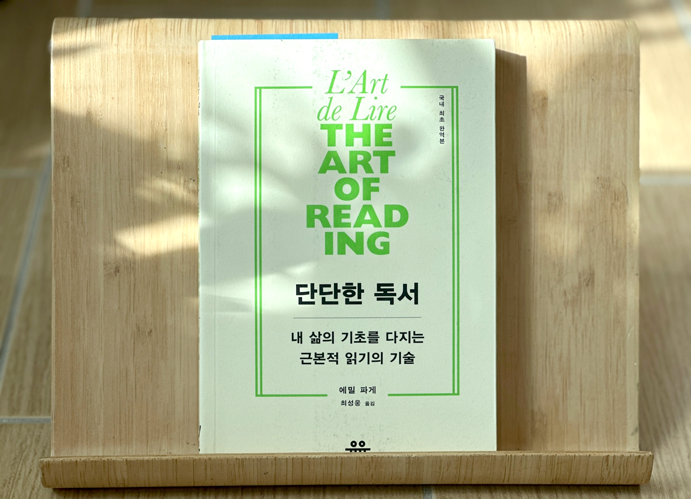

안녕하세요 라보엠입니다.
오늘 소개해 드릴 책 에밀 파게의 단단한 독서는 1912년 프랑스에서 출간된 이후 100년이 넘도록 독서법의 고전으로 자리매김한 책입니다. 국내에는 1959년 ‘독서술’이라는 제목으로 처음 번역되었고, 최근에는 온전한 번역본이 새롭게 출간되어 많은 독자들에게 다시 주목받고 있습니다. 이 책은 단순히 책을 많이 읽는 법이나 속독법을 알려주는 것이 아니라, ‘어떻게 깊이 있고 단단하게 읽을 것인가’에 대한 근본적인 통찰을 담고 있습니다.

느리게 읽기와 거듭 읽기
저자가 강조하는 가장 중요한 독서법은 ‘느리게 읽기’와 ‘거듭 읽기’입니다. 그는 빠르게 많은 책을 읽는 것보다, 한 권의 책을 천천히, 그리고 여러 번 읽으며 그 깊이를 체험하는 것이 진짜 독서라고 말합니다. 느리게 읽으면 사물에서 받은 첫인상에 속지 않고, 자신을 잃지 않으며, 읽어야 할 책과 읽지 않아도 될 책을 구별할 수 있습니다. 거듭 읽기는 더 잘 읽기 위해, 그리고 책의 세부와 문체를 음미하기 위해 필요하다고 강조합니다. 두 번째, 세 번째로 읽을 때마다 새로운 의미와 감동을 발견하게 되며, 이는 독서의 본질적인 기쁨이기도 합니다.
생각과 감정을 담은 책 읽기
단단한 독서는 책의 성격에 따라 읽는 방법도 달라야 한다고 조언합니다. 철학서처럼 생각을 담은 책은 저자와 끊임없이 비교하고 대조하며 읽어야 하며, 저자의 주장과 내 생각을 부딪히는 과정에서 사고의 힘이 자라난다고 말합니다. 반면 시나 소설처럼 감정을 담은 책은 우선 작품에 흠뻑 빠져들어야 하며, 도취에서 깨어난 후에는 그 작품이 인생을 얼마나 정확하게 그려냈는지 비평적으로 바라볼 필요가 있습니다.
연극 작품과 난해한 작가, 조악한 작가 읽기
에밀 파게는 연극 작품을 읽을 때는 마치 극장에서 공연을 보는 것처럼 상상력을 동원하라고 권합니다. 대사와 행동을 실제 배우가 무대에서 펼치는 듯 그려보며 읽는 것이 중요합니다. 난해한 작가나 조악한 작가를 읽을 때는 비평 의식을 더욱 강화해야 한다고 조언합니다. 난해한 작가는 독자를 헷갈리게 만들 수 있으니, 그 의도를 파악하고 비판적으로 읽어야 하며, 졸렬한 책을 읽는 경험 역시 좋은 작품의 가치를 더 깊이 깨닫게 해주는 계기가 될 수 있습니다.
비평가 읽기와 독서의 적
비평가의 책은 작가의 원작을 읽은 후에 읽는 것이 좋다고 저자는 말하고 있습니다. 비평을 먼저 접하면 독자 자신의 시각이 가려질 수 있기 때문입니다. 또 독서를 방해하는 적으로는 자기애, 소심함, 몰입의 부족, 비판 정신의 결여 등을 꼽으며, 비판적 읽기와 자기 성찰을 통해 진짜 독서의 힘을 길러야 한다고 강조하고 있습니다.
독서의 궁극적 목적
에밀 파게는 독서의 궁극적인 목적을 “자기 자신을 거듭하여 읽기 위해서, 자신을 깨닫기 위해서, 자신을 분석하고 비교를 통해 자신을 알기 위해서, 그리고 우리가 무엇을 잃어버렸는지를 알기 위해서”라고 말합니다. 그는 독서를 통해 정신적 자유와 지적 행복에 도달할 수 있다고 믿었습니다. 단단한 독서는 단순히 지식을 쌓는 것이 아니라, 자기 자신과의 대화, 그리고 세상과의 깊은 교감을 가능하게 합니다.
단단한 독서 후기
단단한 독서를 읽으며 가장 인상 깊었던 점은, 독서란 정보 습득을 위한 것이 아니라, 나 자신을 돌아보고 성장시키는 과정임을 다시금 깨닫게 해준다는 것입니다. 에밀 파게의 느리게 읽기, 거듭 읽기라는 원칙은 바쁜 현대인들에게도 여전히 유효한 지침입니다. 책을 많이 읽는 것보다, 한 권의 책과 깊이 대화하는 경험이 얼마나 소중한지, 그리고 그것이 나를 단단하게 만드는 힘임을 실감하게 됩니다.
맺음말
에밀 파게의 단단한 독서는 독서의 본질과 즐거움을 다시 생각하게 만드는 책입니다. 텍스트힙이라는 열풍속에서 속도와 효율에만 집착하는 현대의 독서 풍토 속에서, 느리게, 그리고 여러 번 읽으며 책과 자신을 깊이 만나라는 에밀 파게의 조언은 오랜 시간이 지나도 변치 않는 가치를 지니고 있습니다. 독서의 진짜 힘을 알고 싶은 모든 이들에게 이 책을 추천드립니다.